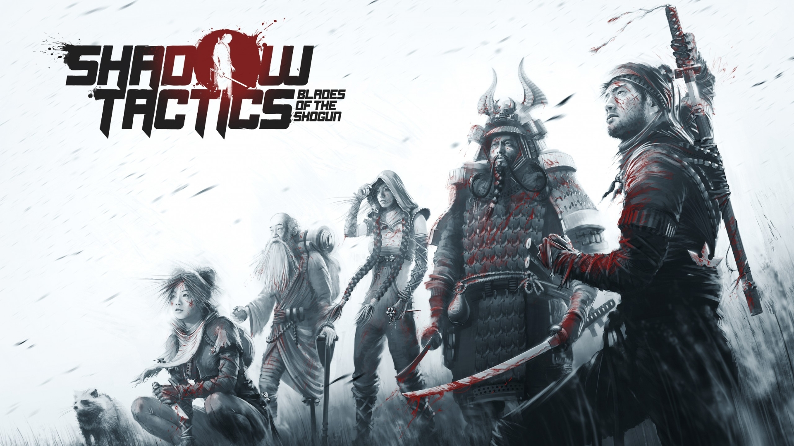

Gry Skradanki

Thief

Thief to gra akcji stawiająca na prowadzenie działań z ukrycia i traktująca o przygodach tytułowego złodzieja Garretta. Produkcja ta została stworzona przez studio Eidos Montreal, znane z Deus Ex: Bunt Ludzkości. W Thiefie wracamy do uniwersum stanowiącego połączenie kilku motywów: okresu wiktoriańskiego, magii, gotyku oraz steampunku.
Pay Day 2
Gracze wcielają się w członków zorganizowanego gangu przestępców. Akcja osadzona jest w mieście Waszyngton, a fabuła koncentruje się na serii niebezpiecznych zleceń otrzymywanych za pomocą systemu CRIMENET. W misjach bierze udział maksymalnie czterech graczy.
Party Hard

Wcielamy się w człowieka, który, poirytowany notorycznymi imprezami i zakłócaniem ciszy nocnej przez swoich sąsiadów, postanawia uporać się z problemem w dość drastyczny sposób. Zamiast kolejny raz wzywać policję, protagonista zamierza dostać się na imprezę i wymordować wszystkich jej uczestników.
Dishonored

W Dishonored gracz wciela się w postać Corvo Attano, legendarnego Lorda Protektora cesarzowej Jessamine Kaldwin, zamordowanej w zamachu stanu uknutym przez ambitnego Hirama Burrowsa, Lorda Regenta. Fikcyjne miasto Dunwall, które zwiedzamy w czasie przygód, czerpie z estetyki steampunka i epoki wiktoriańskiej.
Shadow Tactics: Blades of the Shogun

Gra przenosi nas do Japonii w 1615 roku, czyli wczesnego okresu Epoki Edo. Nowy Szogun postanawia zaprowadzić pokój w całym kraju, co wymaga cichego wyeliminowania wszystkich oponentów marzących o rebelii. W tym celu zwraca się o pomoc do grupy pięciu specjalistów od zabójstw, sabotażu i szpiegostwa.
Poznaj najlepasze gry według mnie na pc. Wszystkie prawa zastrzeżone ©